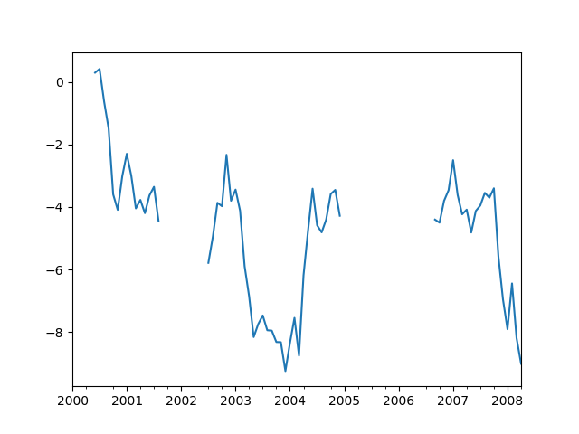
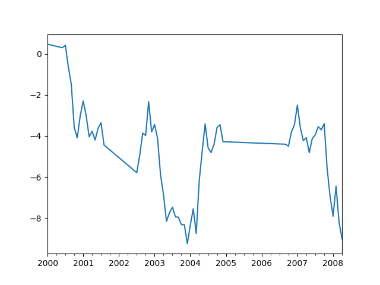

Working with missing data¶
In this section, we will discuss missing (also referred to as NA) values in pandas.
Note
The choice of using NaN internally to denote missing data was largely
for simplicity and performance reasons. It differs from the MaskedArray
approach of, for example, scikits.timeseries. We are hopeful that
NumPy will soon be able to provide a native NA type solution (similar to R)
performant enough to be used in pandas.
See the cookbook for some advanced strategies.
Values considered “missing”¶
As data comes in many shapes and forms, pandas aims to be flexible with regard
to handling missing data. While NaN is the default missing value marker for
reasons of computational speed and convenience, we need to be able to easily
detect this value with data of different types: floating point, integer,
boolean, and general object. In many cases, however, the Python None will
arise and we wish to also consider that “missing” or “not available” or “NA”.
Note
If you want to consider inf and -inf to be “NA” in computations,
you can set pandas.options.mode.use_inf_as_na = True.
In [1]: df = pd.DataFrame(np.random.randn(5, 3), index=['a', 'c', 'e', 'f', 'h'],
...: columns=['one', 'two', 'three'])
...:
In [2]: df['four'] = 'bar'
In [3]: df['five'] = df['one'] > 0
In [4]: df
Out[4]:
one two three four five
a 0.469112 -0.282863 -1.509059 bar True
c -1.135632 1.212112 -0.173215 bar False
e 0.119209 -1.044236 -0.861849 bar True
f -2.104569 -0.494929 1.071804 bar False
h 0.721555 -0.706771 -1.039575 bar True
In [5]: df2 = df.reindex(['a', 'b', 'c', 'd', 'e', 'f', 'g', 'h'])
In [6]: df2
Out[6]:
one two three four five
a 0.469112 -0.282863 -1.509059 bar True
b NaN NaN NaN NaN NaN
c -1.135632 1.212112 -0.173215 bar False
d NaN NaN NaN NaN NaN
e 0.119209 -1.044236 -0.861849 bar True
f -2.104569 -0.494929 1.071804 bar False
g NaN NaN NaN NaN NaN
h 0.721555 -0.706771 -1.039575 bar True
To make detecting missing values easier (and across different array dtypes),
pandas provides the isna() and
notna() functions, which are also methods on
Series and DataFrame objects:
In [7]: df2['one']
Out[7]:
a 0.469112
b NaN
c -1.135632
d NaN
e 0.119209
f -2.104569
g NaN
h 0.721555
Name: one, dtype: float64
In [8]: pd.isna(df2['one'])
Out[8]:
a False
b True
c False
d True
e False
f False
g True
h False
Name: one, dtype: bool
In [9]: df2['four'].notna()
Out[9]:
a True
b False
c True
d False
e True
f True
g False
h True
Name: four, dtype: bool
In [10]: df2.isna()
Out[10]:
one two three four five
a False False False False False
b True True True True True
c False False False False False
d True True True True True
e False False False False False
f False False False False False
g True True True True True
h False False False False False
Warning
One has to be mindful that in Python (and NumPy), the nan's don’t compare equal, but None's do.
Note that pandas/NumPy uses the fact that np.nan != np.nan, and treats None like np.nan.
In [11]: None == None # noqa: E711 Out[11]: True In [12]: np.nan == np.nan Out[12]: False
So as compared to above, a scalar equality comparison versus a None/np.nan doesn’t provide useful information.
In [13]: df2['one'] == np.nan
Out[13]:
a False
b False
c False
d False
e False
f False
g False
h False
Name: one, dtype: bool
Integer dtypes and missing data¶
Because NaN is a float, a column of integers with even one missing values
is cast to floating-point dtype (see Support for integer NA for more). Pandas
provides a nullable integer array, which can be used by explicitly requesting
the dtype:
In [14]: pd.Series([1, 2, np.nan, 4], dtype=pd.Int64Dtype())
Out[14]:
0 1
1 2
2 NaN
3 4
dtype: Int64
Alternatively, the string alias dtype='Int64' (note the capital "I") can be
used.
See Nullable integer data type for more.
Datetimes¶
For datetime64[ns] types, NaT represents missing values. This is a pseudo-native
sentinel value that can be represented by NumPy in a singular dtype (datetime64[ns]).
pandas objects provide compatibility between NaT and NaN.
In [15]: df2 = df.copy()
In [16]: df2['timestamp'] = pd.Timestamp('20120101')
In [17]: df2
Out[17]:
one two three four five timestamp
a 0.469112 -0.282863 -1.509059 bar True 2012-01-01
c -1.135632 1.212112 -0.173215 bar False 2012-01-01
e 0.119209 -1.044236 -0.861849 bar True 2012-01-01
f -2.104569 -0.494929 1.071804 bar False 2012-01-01
h 0.721555 -0.706771 -1.039575 bar True 2012-01-01
In [18]: df2.loc[['a', 'c', 'h'], ['one', 'timestamp']] = np.nan
In [19]: df2
Out[19]:
one two three four five timestamp
a NaN -0.282863 -1.509059 bar True NaT
c NaN 1.212112 -0.173215 bar False NaT
e 0.119209 -1.044236 -0.861849 bar True 2012-01-01
f -2.104569 -0.494929 1.071804 bar False 2012-01-01
h NaN -0.706771 -1.039575 bar True NaT
In [20]: df2.dtypes.value_counts()
Out[20]:
float64 3
datetime64[ns] 1
object 1
bool 1
dtype: int64
Inserting missing data¶
You can insert missing values by simply assigning to containers. The actual missing value used will be chosen based on the dtype.
For example, numeric containers will always use NaN regardless of
the missing value type chosen:
In [21]: s = pd.Series([1, 2, 3])
In [22]: s.loc[0] = None
In [23]: s
Out[23]:
0 NaN
1 2.0
2 3.0
dtype: float64
Likewise, datetime containers will always use NaT.
For object containers, pandas will use the value given:
In [24]: s = pd.Series(["a", "b", "c"])
In [25]: s.loc[0] = None
In [26]: s.loc[1] = np.nan
In [27]: s
Out[27]:
0 None
1 NaN
2 c
dtype: object
Calculations with missing data¶
Missing values propagate naturally through arithmetic operations between pandas objects.
In [28]: a
Out[28]:
one two
a NaN -0.282863
c NaN 1.212112
e 0.119209 -1.044236
f -2.104569 -0.494929
h -2.104569 -0.706771
In [29]: b
Out[29]:
one two three
a NaN -0.282863 -1.509059
c NaN 1.212112 -0.173215
e 0.119209 -1.044236 -0.861849
f -2.104569 -0.494929 1.071804
h NaN -0.706771 -1.039575
In [30]: a + b
Out[30]:
one three two
a NaN NaN -0.565727
c NaN NaN 2.424224
e 0.238417 NaN -2.088472
f -4.209138 NaN -0.989859
h NaN NaN -1.413542
The descriptive statistics and computational methods discussed in the data structure overview (and listed here and here) are all written to account for missing data. For example:
- When summing data, NA (missing) values will be treated as zero.
- If the data are all NA, the result will be 0.
- Cumulative methods like
cumsum()andcumprod()ignore NA values by default, but preserve them in the resulting arrays. To override this behaviour and include NA values, useskipna=False.
In [31]: df
Out[31]:
one two three
a NaN -0.282863 -1.509059
c NaN 1.212112 -0.173215
e 0.119209 -1.044236 -0.861849
f -2.104569 -0.494929 1.071804
h NaN -0.706771 -1.039575
In [32]: df['one'].sum()
Out[32]: -1.9853605075978744
In [33]: df.mean(1)
Out[33]:
a -0.895961
c 0.519449
e -0.595625
f -0.509232
h -0.873173
dtype: float64
In [34]: df.cumsum()
Out[34]:
one two three
a NaN -0.282863 -1.509059
c NaN 0.929249 -1.682273
e 0.119209 -0.114987 -2.544122
f -1.985361 -0.609917 -1.472318
h NaN -1.316688 -2.511893
In [35]: df.cumsum(skipna=False)
Out[35]:
one two three
a NaN -0.282863 -1.509059
c NaN 0.929249 -1.682273
e NaN -0.114987 -2.544122
f NaN -0.609917 -1.472318
h NaN -1.316688 -2.511893
Sum/prod of empties/nans¶
Warning
This behavior is now standard as of v0.22.0 and is consistent with the default in numpy; previously sum/prod of all-NA or empty Series/DataFrames would return NaN.
See v0.22.0 whatsnew for more.
The sum of an empty or all-NA Series or column of a DataFrame is 0.
In [36]: pd.Series([np.nan]).sum() Out[36]: 0.0 In [37]: pd.Series([]).sum() Out[37]: 0.0
The product of an empty or all-NA Series or column of a DataFrame is 1.
In [38]: pd.Series([np.nan]).prod() Out[38]: 1.0 In [39]: pd.Series([]).prod() Out[39]: 1.0
NA values in GroupBy¶
NA groups in GroupBy are automatically excluded. This behavior is consistent with R, for example:
In [40]: df
Out[40]:
one two three
a NaN -0.282863 -1.509059
c NaN 1.212112 -0.173215
e 0.119209 -1.044236 -0.861849
f -2.104569 -0.494929 1.071804
h NaN -0.706771 -1.039575
In [41]: df.groupby('one').mean()
Out[41]:
two three
one
-2.104569 -0.494929 1.071804
0.119209 -1.044236 -0.861849
See the groupby section here for more information.
Cleaning / filling missing data¶
pandas objects are equipped with various data manipulation methods for dealing with missing data.
Filling missing values: fillna¶
fillna() can “fill in” NA values with non-NA data in a couple
of ways, which we illustrate:
Replace NA with a scalar value
In [42]: df2
Out[42]:
one two three four five timestamp
a NaN -0.282863 -1.509059 bar True NaT
c NaN 1.212112 -0.173215 bar False NaT
e 0.119209 -1.044236 -0.861849 bar True 2012-01-01
f -2.104569 -0.494929 1.071804 bar False 2012-01-01
h NaN -0.706771 -1.039575 bar True NaT
In [43]: df2.fillna(0)
Out[43]:
one two three four five timestamp
a 0.000000 -0.282863 -1.509059 bar True 0
c 0.000000 1.212112 -0.173215 bar False 0
e 0.119209 -1.044236 -0.861849 bar True 2012-01-01 00:00:00
f -2.104569 -0.494929 1.071804 bar False 2012-01-01 00:00:00
h 0.000000 -0.706771 -1.039575 bar True 0
In [44]: df2['one'].fillna('missing')
Out[44]:
a missing
c missing
e 0.119209
f -2.10457
h missing
Name: one, dtype: object
Fill gaps forward or backward
Using the same filling arguments as reindexing, we can propagate non-NA values forward or backward:
In [45]: df
Out[45]:
one two three
a NaN -0.282863 -1.509059
c NaN 1.212112 -0.173215
e 0.119209 -1.044236 -0.861849
f -2.104569 -0.494929 1.071804
h NaN -0.706771 -1.039575
In [46]: df.fillna(method='pad')
Out[46]:
one two three
a NaN -0.282863 -1.509059
c NaN 1.212112 -0.173215
e 0.119209 -1.044236 -0.861849
f -2.104569 -0.494929 1.071804
h -2.104569 -0.706771 -1.039575
Limit the amount of filling
If we only want consecutive gaps filled up to a certain number of data points, we can use the limit keyword:
In [47]: df Out[47]: one two three a NaN -0.282863 -1.509059 c NaN 1.212112 -0.173215 e NaN NaN NaN f NaN NaN NaN h NaN -0.706771 -1.039575 In [48]: df.fillna(method='pad', limit=1) Out[48]: one two three a NaN -0.282863 -1.509059 c NaN 1.212112 -0.173215 e NaN 1.212112 -0.173215 f NaN NaN NaN h NaN -0.706771 -1.039575
To remind you, these are the available filling methods:
| Method | Action |
|---|---|
| pad / ffill | Fill values forward |
| bfill / backfill | Fill values backward |
With time series data, using pad/ffill is extremely common so that the “last known value” is available at every time point.
ffill() is equivalent to fillna(method='ffill')
and bfill() is equivalent to fillna(method='bfill')
Filling with a PandasObject¶
You can also fillna using a dict or Series that is alignable. The labels of the dict or index of the Series must match the columns of the frame you wish to fill. The use case of this is to fill a DataFrame with the mean of that column.
In [49]: dff = pd.DataFrame(np.random.randn(10, 3), columns=list('ABC'))
In [50]: dff.iloc[3:5, 0] = np.nan
In [51]: dff.iloc[4:6, 1] = np.nan
In [52]: dff.iloc[5:8, 2] = np.nan
In [53]: dff
Out[53]:
A B C
0 0.271860 -0.424972 0.567020
1 0.276232 -1.087401 -0.673690
2 0.113648 -1.478427 0.524988
3 NaN 0.577046 -1.715002
4 NaN NaN -1.157892
5 -1.344312 NaN NaN
6 -0.109050 1.643563 NaN
7 0.357021 -0.674600 NaN
8 -0.968914 -1.294524 0.413738
9 0.276662 -0.472035 -0.013960
In [54]: dff.fillna(dff.mean())
Out[54]:
A B C
0 0.271860 -0.424972 0.567020
1 0.276232 -1.087401 -0.673690
2 0.113648 -1.478427 0.524988
3 -0.140857 0.577046 -1.715002
4 -0.140857 -0.401419 -1.157892
5 -1.344312 -0.401419 -0.293543
6 -0.109050 1.643563 -0.293543
7 0.357021 -0.674600 -0.293543
8 -0.968914 -1.294524 0.413738
9 0.276662 -0.472035 -0.013960
In [55]: dff.fillna(dff.mean()['B':'C'])
Out[55]:
A B C
0 0.271860 -0.424972 0.567020
1 0.276232 -1.087401 -0.673690
2 0.113648 -1.478427 0.524988
3 NaN 0.577046 -1.715002
4 NaN -0.401419 -1.157892
5 -1.344312 -0.401419 -0.293543
6 -0.109050 1.643563 -0.293543
7 0.357021 -0.674600 -0.293543
8 -0.968914 -1.294524 0.413738
9 0.276662 -0.472035 -0.013960
Same result as above, but is aligning the ‘fill’ value which is a Series in this case.
In [56]: dff.where(pd.notna(dff), dff.mean(), axis='columns')
Out[56]:
A B C
0 0.271860 -0.424972 0.567020
1 0.276232 -1.087401 -0.673690
2 0.113648 -1.478427 0.524988
3 -0.140857 0.577046 -1.715002
4 -0.140857 -0.401419 -1.157892
5 -1.344312 -0.401419 -0.293543
6 -0.109050 1.643563 -0.293543
7 0.357021 -0.674600 -0.293543
8 -0.968914 -1.294524 0.413738
9 0.276662 -0.472035 -0.013960
Dropping axis labels with missing data: dropna¶
You may wish to simply exclude labels from a data set which refer to missing
data. To do this, use dropna():
In [57]: df
Out[57]:
one two three
a NaN -0.282863 -1.509059
c NaN 1.212112 -0.173215
e NaN 0.000000 0.000000
f NaN 0.000000 0.000000
h NaN -0.706771 -1.039575
In [58]: df.dropna(axis=0)
Out[58]:
Empty DataFrame
Columns: [one, two, three]
Index: []
In [59]: df.dropna(axis=1)
Out[59]:
two three
a -0.282863 -1.509059
c 1.212112 -0.173215
e 0.000000 0.000000
f 0.000000 0.000000
h -0.706771 -1.039575
In [60]: df['one'].dropna()
Out[60]: Series([], Name: one, dtype: float64)
An equivalent dropna() is available for Series.
DataFrame.dropna has considerably more options than Series.dropna, which can be
examined in the API.
Interpolation¶
New in version 0.23.0: The limit_area keyword argument was added.
Both Series and DataFrame objects have interpolate()
that, by default, performs linear interpolation at missing data points.
In [61]: ts
Out[61]:
2000-01-31 0.469112
2000-02-29 NaN
2000-03-31 NaN
2000-04-28 NaN
2000-05-31 NaN
...
2007-12-31 -6.950267
2008-01-31 -7.904475
2008-02-29 -6.441779
2008-03-31 -8.184940
2008-04-30 -9.011531
Freq: BM, Length: 100, dtype: float64
In [62]: ts.count()
Out[62]: 66
In [63]: ts.plot()
Out[63]: <matplotlib.axes._subplots.AxesSubplot at 0x7f450959b710>

In [64]: ts.interpolate()
Out[64]:
2000-01-31 0.469112
2000-02-29 0.434469
2000-03-31 0.399826
2000-04-28 0.365184
2000-05-31 0.330541
...
2007-12-31 -6.950267
2008-01-31 -7.904475
2008-02-29 -6.441779
2008-03-31 -8.184940
2008-04-30 -9.011531
Freq: BM, Length: 100, dtype: float64
In [65]: ts.interpolate().count()
Out[65]: 100
In [66]: ts.interpolate().plot()
Out[66]: <matplotlib.axes._subplots.AxesSubplot at 0x7f450953b690>

Index aware interpolation is available via the method keyword:
In [67]: ts2 Out[67]: 2000-01-31 0.469112 2000-02-29 NaN 2002-07-31 -5.785037 2005-01-31 NaN 2008-04-30 -9.011531 dtype: float64 In [68]: ts2.interpolate() Out[68]: 2000-01-31 0.469112 2000-02-29 -2.657962 2002-07-31 -5.785037 2005-01-31 -7.398284 2008-04-30 -9.011531 dtype: float64 In [69]: ts2.interpolate(method='time') Out[69]: 2000-01-31 0.469112 2000-02-29 0.270241 2002-07-31 -5.785037 2005-01-31 -7.190866 2008-04-30 -9.011531 dtype: float64
For a floating-point index, use method='values':
In [70]: ser Out[70]: 0.0 0.0 1.0 NaN 10.0 10.0 dtype: float64 In [71]: ser.interpolate() Out[71]: 0.0 0.0 1.0 5.0 10.0 10.0 dtype: float64 In [72]: ser.interpolate(method='values') Out[72]: 0.0 0.0 1.0 1.0 10.0 10.0 dtype: float64
You can also interpolate with a DataFrame:
In [73]: df = pd.DataFrame({'A': [1, 2.1, np.nan, 4.7, 5.6, 6.8],
....: 'B': [.25, np.nan, np.nan, 4, 12.2, 14.4]})
....:
In [74]: df
Out[74]:
A B
0 1.0 0.25
1 2.1 NaN
2 NaN NaN
3 4.7 4.00
4 5.6 12.20
5 6.8 14.40
In [75]: df.interpolate()
Out[75]:
A B
0 1.0 0.25
1 2.1 1.50
2 3.4 2.75
3 4.7 4.00
4 5.6 12.20
5 6.8 14.40
The method argument gives access to fancier interpolation methods.
If you have scipy installed, you can pass the name of a 1-d interpolation routine to method.
You’ll want to consult the full scipy interpolation documentation and reference guide for details.
The appropriate interpolation method will depend on the type of data you are working with.
- If you are dealing with a time series that is growing at an increasing rate,
method='quadratic'may be appropriate. - If you have values approximating a cumulative distribution function,
then
method='pchip'should work well. - To fill missing values with goal of smooth plotting, consider
method='akima'.
Warning
These methods require scipy.
In [76]: df.interpolate(method='barycentric')
Out[76]:
A B
0 1.00 0.250
1 2.10 -7.660
2 3.53 -4.515
3 4.70 4.000
4 5.60 12.200
5 6.80 14.400
In [77]: df.interpolate(method='pchip')
Out[77]:
A B
0 1.00000 0.250000
1 2.10000 0.672808
2 3.43454 1.928950
3 4.70000 4.000000
4 5.60000 12.200000
5 6.80000 14.400000
In [78]: df.interpolate(method='akima')
Out[78]:
A B
0 1.000000 0.250000
1 2.100000 -0.873316
2 3.406667 0.320034
3 4.700000 4.000000
4 5.600000 12.200000
5 6.800000 14.400000
When interpolating via a polynomial or spline approximation, you must also specify the degree or order of the approximation:
In [79]: df.interpolate(method='spline', order=2)
Out[79]:
A B
0 1.000000 0.250000
1 2.100000 -0.428598
2 3.404545 1.206900
3 4.700000 4.000000
4 5.600000 12.200000
5 6.800000 14.400000
In [80]: df.interpolate(method='polynomial', order=2)
Out[80]:
A B
0 1.000000 0.250000
1 2.100000 -2.703846
2 3.451351 -1.453846
3 4.700000 4.000000
4 5.600000 12.200000
5 6.800000 14.400000
Compare several methods:
In [81]: np.random.seed(2)
In [82]: ser = pd.Series(np.arange(1, 10.1, .25) ** 2 + np.random.randn(37))
In [83]: missing = np.array([4, 13, 14, 15, 16, 17, 18, 20, 29])
In [84]: ser[missing] = np.nan
In [85]: methods = ['linear', 'quadratic', 'cubic']
In [86]: df = pd.DataFrame({m: ser.interpolate(method=m) for m in methods})
In [87]: df.plot()
Out[87]: <matplotlib.axes._subplots.AxesSubplot at 0x7f450951ac10>
Another use case is interpolation at new values.
Suppose you have 100 observations from some distribution. And let’s suppose
that you’re particularly interested in what’s happening around the middle.
You can mix pandas’ reindex and interpolate methods to interpolate
at the new values.
In [88]: ser = pd.Series(np.sort(np.random.uniform(size=100)))
# interpolate at new_index
In [89]: new_index = ser.index | pd.Index([49.25, 49.5, 49.75, 50.25, 50.5, 50.75])
In [90]: interp_s = ser.reindex(new_index).interpolate(method='pchip')
In [91]: interp_s[49:51]
Out[91]:
49.00 0.471410
49.25 0.476841
49.50 0.481780
49.75 0.485998
50.00 0.489266
50.25 0.491814
50.50 0.493995
50.75 0.495763
51.00 0.497074
dtype: float64
Interpolation limits¶
Like other pandas fill methods, interpolate() accepts a limit keyword
argument. Use this argument to limit the number of consecutive NaN values
filled since the last valid observation:
In [92]: ser = pd.Series([np.nan, np.nan, 5, np.nan, np.nan, ....: np.nan, 13, np.nan, np.nan]) ....: In [93]: ser Out[93]: 0 NaN 1 NaN 2 5.0 3 NaN 4 NaN 5 NaN 6 13.0 7 NaN 8 NaN dtype: float64 # fill all consecutive values in a forward direction In [94]: ser.interpolate() Out[94]: 0 NaN 1 NaN 2 5.0 3 7.0 4 9.0 5 11.0 6 13.0 7 13.0 8 13.0 dtype: float64 # fill one consecutive value in a forward direction In [95]: ser.interpolate(limit=1) Out[95]: 0 NaN 1 NaN 2 5.0 3 7.0 4 NaN 5 NaN 6 13.0 7 13.0 8 NaN dtype: float64
By default, NaN values are filled in a forward direction. Use
limit_direction parameter to fill backward or from both directions.
# fill one consecutive value backwards In [96]: ser.interpolate(limit=1, limit_direction='backward') Out[96]: 0 NaN 1 5.0 2 5.0 3 NaN 4 NaN 5 11.0 6 13.0 7 NaN 8 NaN dtype: float64 # fill one consecutive value in both directions In [97]: ser.interpolate(limit=1, limit_direction='both') Out[97]: 0 NaN 1 5.0 2 5.0 3 7.0 4 NaN 5 11.0 6 13.0 7 13.0 8 NaN dtype: float64 # fill all consecutive values in both directions In [98]: ser.interpolate(limit_direction='both') Out[98]: 0 5.0 1 5.0 2 5.0 3 7.0 4 9.0 5 11.0 6 13.0 7 13.0 8 13.0 dtype: float64
By default, NaN values are filled whether they are inside (surrounded by)
existing valid values, or outside existing valid values. Introduced in v0.23
the limit_area parameter restricts filling to either inside or outside values.
# fill one consecutive inside value in both directions In [99]: ser.interpolate(limit_direction='both', limit_area='inside', limit=1) Out[99]: 0 NaN 1 NaN 2 5.0 3 7.0 4 NaN 5 11.0 6 13.0 7 NaN 8 NaN dtype: float64 # fill all consecutive outside values backward In [100]: ser.interpolate(limit_direction='backward', limit_area='outside') Out[100]: 0 5.0 1 5.0 2 5.0 3 NaN 4 NaN 5 NaN 6 13.0 7 NaN 8 NaN dtype: float64 # fill all consecutive outside values in both directions In [101]: ser.interpolate(limit_direction='both', limit_area='outside') Out[101]: 0 5.0 1 5.0 2 5.0 3 NaN 4 NaN 5 NaN 6 13.0 7 13.0 8 13.0 dtype: float64
Replacing generic values¶
Often times we want to replace arbitrary values with other values.
replace() in Series and replace() in DataFrame provides an efficient yet
flexible way to perform such replacements.
For a Series, you can replace a single value or a list of values by another value:
In [102]: ser = pd.Series([0., 1., 2., 3., 4.])
In [103]: ser.replace(0, 5)
Out[103]:
0 5.0
1 1.0
2 2.0
3 3.0
4 4.0
dtype: float64
You can replace a list of values by a list of other values:
In [104]: ser.replace([0, 1, 2, 3, 4], [4, 3, 2, 1, 0])
Out[104]:
0 4.0
1 3.0
2 2.0
3 1.0
4 0.0
dtype: float64
You can also specify a mapping dict:
In [105]: ser.replace({0: 10, 1: 100})
Out[105]:
0 10.0
1 100.0
2 2.0
3 3.0
4 4.0
dtype: float64
For a DataFrame, you can specify individual values by column:
In [106]: df = pd.DataFrame({'a': [0, 1, 2, 3, 4], 'b': [5, 6, 7, 8, 9]})
In [107]: df.replace({'a': 0, 'b': 5}, 100)
Out[107]:
a b
0 100 100
1 1 6
2 2 7
3 3 8
4 4 9
Instead of replacing with specified values, you can treat all given values as missing and interpolate over them:
In [108]: ser.replace([1, 2, 3], method='pad')
Out[108]:
0 0.0
1 0.0
2 0.0
3 0.0
4 4.0
dtype: float64
String/regular expression replacement¶
Note
Python strings prefixed with the r character such as r'hello world'
are so-called “raw” strings. They have different semantics regarding
backslashes than strings without this prefix. Backslashes in raw strings
will be interpreted as an escaped backslash, e.g., r'\' == '\\'. You
should read about them
if this is unclear.
Replace the ‘.’ with NaN (str -> str):
In [109]: d = {'a': list(range(4)), 'b': list('ab..'), 'c': ['a', 'b', np.nan, 'd']}
In [110]: df = pd.DataFrame(d)
In [111]: df.replace('.', np.nan)
Out[111]:
a b c
0 0 a a
1 1 b b
2 2 NaN NaN
3 3 NaN d
Now do it with a regular expression that removes surrounding whitespace (regex -> regex):
In [112]: df.replace(r'\s*\.\s*', np.nan, regex=True)
Out[112]:
a b c
0 0 a a
1 1 b b
2 2 NaN NaN
3 3 NaN d
Replace a few different values (list -> list):
In [113]: df.replace(['a', '.'], ['b', np.nan])
Out[113]:
a b c
0 0 b b
1 1 b b
2 2 NaN NaN
3 3 NaN d
list of regex -> list of regex:
In [114]: df.replace([r'\.', r'(a)'], ['dot', r'\1stuff'], regex=True)
Out[114]:
a b c
0 0 astuff astuff
1 1 b b
2 2 dot NaN
3 3 dot d
Only search in column 'b' (dict -> dict):
In [115]: df.replace({'b': '.'}, {'b': np.nan})
Out[115]:
a b c
0 0 a a
1 1 b b
2 2 NaN NaN
3 3 NaN d
Same as the previous example, but use a regular expression for searching instead (dict of regex -> dict):
In [116]: df.replace({'b': r'\s*\.\s*'}, {'b': np.nan}, regex=True)
Out[116]:
a b c
0 0 a a
1 1 b b
2 2 NaN NaN
3 3 NaN d
You can pass nested dictionaries of regular expressions that use regex=True:
In [117]: df.replace({'b': {'b': r''}}, regex=True)
Out[117]:
a b c
0 0 a a
1 1 b
2 2 . NaN
3 3 . d
Alternatively, you can pass the nested dictionary like so:
In [118]: df.replace(regex={'b': {r'\s*\.\s*': np.nan}})
Out[118]:
a b c
0 0 a a
1 1 b b
2 2 NaN NaN
3 3 NaN d
You can also use the group of a regular expression match when replacing (dict of regex -> dict of regex), this works for lists as well.
In [119]: df.replace({'b': r'\s*(\.)\s*'}, {'b': r'\1ty'}, regex=True)
Out[119]:
a b c
0 0 a a
1 1 b b
2 2 .ty NaN
3 3 .ty d
You can pass a list of regular expressions, of which those that match will be replaced with a scalar (list of regex -> regex).
In [120]: df.replace([r'\s*\.\s*', r'a|b'], np.nan, regex=True)
Out[120]:
a b c
0 0 NaN NaN
1 1 NaN NaN
2 2 NaN NaN
3 3 NaN d
All of the regular expression examples can also be passed with the
to_replace argument as the regex argument. In this case the value
argument must be passed explicitly by name or regex must be a nested
dictionary. The previous example, in this case, would then be:
In [121]: df.replace(regex=[r'\s*\.\s*', r'a|b'], value=np.nan)
Out[121]:
a b c
0 0 NaN NaN
1 1 NaN NaN
2 2 NaN NaN
3 3 NaN d
This can be convenient if you do not want to pass regex=True every time you
want to use a regular expression.
Note
Anywhere in the above replace examples that you see a regular expression
a compiled regular expression is valid as well.
Numeric replacement¶
replace() is similar to fillna().
In [122]: df = pd.DataFrame(np.random.randn(10, 2))
In [123]: df[np.random.rand(df.shape[0]) > 0.5] = 1.5
In [124]: df.replace(1.5, np.nan)
Out[124]:
0 1
0 -0.844214 -1.021415
1 0.432396 -0.323580
2 0.423825 0.799180
3 1.262614 0.751965
4 NaN NaN
5 NaN NaN
6 -0.498174 -1.060799
7 0.591667 -0.183257
8 1.019855 -1.482465
9 NaN NaN
Replacing more than one value is possible by passing a list.
In [125]: df00 = df.iloc[0, 0]
In [126]: df.replace([1.5, df00], [np.nan, 'a'])
Out[126]:
0 1
0 a -1.02141
1 0.432396 -0.32358
2 0.423825 0.79918
3 1.26261 0.751965
4 NaN NaN
5 NaN NaN
6 -0.498174 -1.0608
7 0.591667 -0.183257
8 1.01985 -1.48247
9 NaN NaN
In [127]: df[1].dtype
Out[127]: dtype('float64')
You can also operate on the DataFrame in place:
In [128]: df.replace(1.5, np.nan, inplace=True)
Warning
When replacing multiple bool or datetime64 objects, the first
argument to replace (to_replace) must match the type of the value
being replaced. For example,
>>> s = pd.Series([True, False, True])
>>> s.replace({'a string': 'new value', True: False}) # raises
TypeError: Cannot compare types 'ndarray(dtype=bool)' and 'str'
will raise a TypeError because one of the dict keys is not of the
correct type for replacement.
However, when replacing a single object such as,
In [129]: s = pd.Series([True, False, True])
In [130]: s.replace('a string', 'another string')
Out[130]:
0 True
1 False
2 True
dtype: bool
the original NDFrame object will be returned untouched. We’re working on
unifying this API, but for backwards compatibility reasons we cannot break
the latter behavior. See GH6354 for more details.
Missing data casting rules and indexing¶
While pandas supports storing arrays of integer and boolean type, these types are not capable of storing missing data. Until we can switch to using a native NA type in NumPy, we’ve established some “casting rules”. When a reindexing operation introduces missing data, the Series will be cast according to the rules introduced in the table below.
| data type | Cast to |
|---|---|
| integer | float |
| boolean | object |
| float | no cast |
| object | no cast |
For example:
In [131]: s = pd.Series(np.random.randn(5), index=[0, 2, 4, 6, 7])
In [132]: s > 0
Out[132]:
0 True
2 True
4 True
6 True
7 True
dtype: bool
In [133]: (s > 0).dtype
Out[133]: dtype('bool')
In [134]: crit = (s > 0).reindex(list(range(8)))
In [135]: crit
Out[135]:
0 True
1 NaN
2 True
3 NaN
4 True
5 NaN
6 True
7 True
dtype: object
In [136]: crit.dtype
Out[136]: dtype('O')
Ordinarily NumPy will complain if you try to use an object array (even if it contains boolean values) instead of a boolean array to get or set values from an ndarray (e.g. selecting values based on some criteria). If a boolean vector contains NAs, an exception will be generated:
In [137]: reindexed = s.reindex(list(range(8))).fillna(0)
In [138]: reindexed[crit]
---------------------------------------------------------------------------
ValueError Traceback (most recent call last)
<ipython-input-138-0dac417a4890> in <module>
----> 1 reindexed[crit]
/pandas/pandas/core/series.py in __getitem__(self, key)
1108 key = list(key)
1109
-> 1110 if com.is_bool_indexer(key):
1111 key = check_bool_indexer(self.index, key)
1112
/pandas/pandas/core/common.py in is_bool_indexer(key)
128 if not lib.is_bool_array(key):
129 if isna(key).any():
--> 130 raise ValueError(na_msg)
131 return False
132 return True
ValueError: cannot index with vector containing NA / NaN values
However, these can be filled in using fillna() and it will work fine:
In [139]: reindexed[crit.fillna(False)] Out[139]: 0 0.126504 2 0.696198 4 0.697416 6 0.601516 7 0.003659 dtype: float64 In [140]: reindexed[crit.fillna(True)] Out[140]: 0 0.126504 1 0.000000 2 0.696198 3 0.000000 4 0.697416 5 0.000000 6 0.601516 7 0.003659 dtype: float64
Pandas provides a nullable integer dtype, but you must explicitly request it
when creating the series or column. Notice that we use a capital “I” in
the dtype="Int64".
In [141]: s = pd.Series([0, 1, np.nan, 3, 4], dtype="Int64")
In [142]: s
Out[142]:
0 0
1 1
2 NaN
3 3
4 4
dtype: Int64
See Nullable integer data type for more.